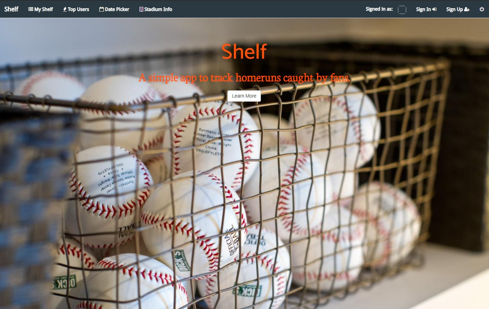
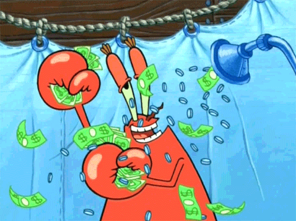
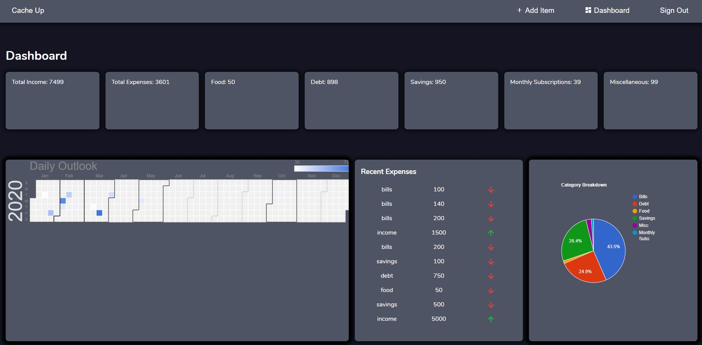
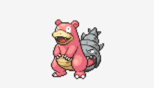
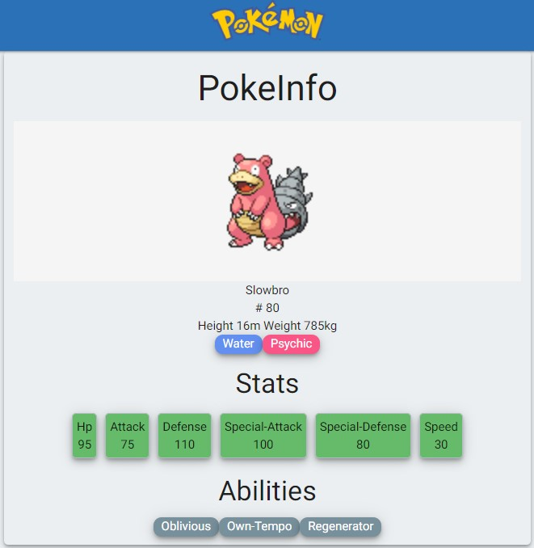

Who am I?
Shelf
Cache Up
Pokemon Search
Want to change my universe?
Alexander J. McComb
I asked myself, “do people really care to see or know anything about me if they found themselves here?”. I thought about that question for a while and came to the conclusion that this is “Myspace”, 😉, and I want to express myself. Things that get me excited include baseball, rockets, space, tech, and learning. Yeah I know, learning, really?! I love finding out new things or understanding how complicated things work. Above are some photos of me and an image from the NASA API for photo of the day. View my twitter, (mostly weird ramblings and occasional dev stuff), github, and linkedin below. Oh, check out what music on youtube I'm listening too that helps me to zen out and focus.
Shelf - Home run tracker
Shelf uses React, jQuery, Bootstrap, MongoDB, and MLB APIs to create, manage, and showcase users and their reported caught home runs. This was my first
single page application I created during the 12 week bootcamp I graduate from at The Iron Yard. The motivation behind this project is to help fans better
choose where to sit in the outfield section of ballparks to increase their chances of catching home runs.


Cache Up - Budget Help
Cache Up is created using React, Firebase, and CSS to help users track and analyze their spending and income. This project was created for me to practice
with new React features, learn how to use Firebase for their authentication, database, and hosting, as well as learn how to use CSS Grid and other CSS
properties.


Pokemon - Search
Pokemon was a fun project for me to work with Google's Material design and an API that I had to learn to paginate my queries. Pokemon search also
allowed me to work with lists and filtering results based on parameters in an efficient and fast algortihm.

